Районы · Центр
Куда сходить в центре Петербурга
230 мест в центре Петербурга (Центральный и Адмиралтейский районы): 39 ресторанов и кафе, 38 баров, 31 музей и 22 места для прогулки. Например, «Salone Pasta&Bar», «Bellevue» и «В тишине». 110 готовых планов начинаются здесь. Больше всего мест у станций «Адмиралтейская», «Чернышевская» и «Невский проспект».
- 230 мест
- 110 планов
- 8 клубов
Места 40 из 222
наб. реки Фонтанки, 30
Новое
Свежая паста и бар на Фонтанке — лёгкий итальянский ужин вдвоём без лишней торжественности.
Подробнее и маршрут: Salone Pasta&BarПозвать сюда: Salone Pasta&Bar
Фото здания: GAlexandrova, CC BY-SA 4.0 · Wikimedia Commons
наб. реки Мойки, 22
Новое
Ресторан на верхнем этаже отеля у Дворцовой: панорама крыш и соборов, сезонная кухня.
Подробнее и маршрут: BellevueПозвать сюда: Bellevue
Фото: Moneycantbuy, CC BY-SA 4.0 · Wikimedia Commons
Шпалерная ул., 26
Новое
Интерактивный музей, где гиды общаются жестами, а гости — без слов; есть формат «свидания в тишине» с мастер-классом.
Подробнее и маршрут: В тишинеПозвать сюда: В тишине
Фото здания: Vityavo, CC BY-SA 4.0 · Wikimedia Commons
Дворцовая площадь, 6-8
Новое
Импрессионисты, Матисс и Пикассо в светлых анфиладах под стеклянными крышами, плюс большие сменные выставки.
Подробнее и маршрут: Главный штаб ЭрмитажаПозвать сюда: Главный штаб Эрмитажа
Фото: Max A. Khlopov, CC BY-SA 3.0 · Wikimedia Commons
Караванная ул., 8
Новое
Демократичное кафе с домашней кухней: хинкали, хачапури-фокачча, сытные салаты — под большую компанию.
Подробнее и маршрут: Мама ТатаПозвать сюда: Мама Тата
Фото здания: Анастасия Юрьевна Львова, CC BY-SA 4.0 · Wikimedia Commons
наб. Адмиралтейского канала, 2
Новое
Остров с выставками, лекциями, кино и маркетами в старых складах; в любое время года есть программа.
Подробнее и маршрут: Новая ГолландияПозвать сюда: Новая Голландия
Фото: Николай Булыкин, CC BY-SA 4.0 · Wikimedia Commons
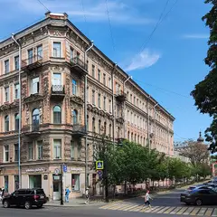
ул. Восстания, 31
Новое
Уютная кофейня у Чернышевской с вишнёвым пирогом и вечерними кинопоказами — спокойный вариант для неспешного свидания.
Подробнее и маршрут: ПенкаПозвать сюда: Пенка
Фото здания: Bestalex, CC BY-SA 4.0 · Wikimedia Commons
Владимирский пр., 12
Новое
Живой репертуарный театр у Владимирской: яркие режиссёрские спектакли и сильная труппа.
Подробнее и маршрут: Театр им. ЛенсоветаПозвать сюда: Театр им. Ленсовета
Фото: Анастасия Юрьевна Львова, CC BY-SA 4.0 · Wikimedia Commons
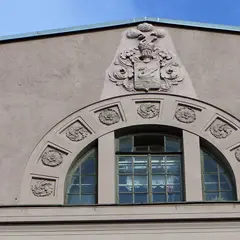
Миллионная ул., 25
Новое
Какаочная в двух шагах от Эрмитажа: густой горячий шоколад и авторское какао из окошка — согреться посреди прогулки.
Подробнее и маршрут: ЧАО КакаоПозвать сюда: ЧАО Какао
Фото здания: Александр Сигачёв, CC BY-SA 4.0 · Wikimedia Commons
ул. Белинского, 13
Новое
Пражская пивная в центре: чешское разливное, рулька и колбаски, а для болельщиков — экран с футбольными матчами.
Подробнее и маршрут: Чешская пивницаПозвать сюда: Чешская пивница
Фото здания: Никонико962, CC BY-SA 4.0 · Wikimedia Commons
ул. Марата, 11
Новое
Ресторан при отеле «Гельвеция»: русско-итальянское меню и тихий красивый двор для неспешного ужина.
Подробнее и маршрут: Café ClaretПозвать сюда: Café Claret
Фото здания: GAlexandrova, CC BY-SA 4.0 · Wikimedia Commons
площадь Островского, 6
Новое
Старейший драмтеатр России в здании Росси: классика в новой режиссуре и зал с ложами в золоте.
Подробнее и маршрут: Александринский театрПозвать сюда: Александринский театр
Фото: Bene Riobó, CC BY-SA 4.0 · Wikimedia Commons
Адмиралтейский пр.
Новое
Сквер у Адмиралтейства с фонтаном и видом на золотой шпиль — удобная передышка между Дворцовой и Исаакием.
Подробнее и маршрут: Александровский садПозвать сюда: Александровский сад
Фото: Alexander77, CC BY-SA 3.0 · Wikimedia Commons
Кирочная ул., 8
Новое
Лютеранская церковь с выразительными голыми стенами: органные концерты, выставки, перформансы.
Подробнее и маршрут: АнненкирхеПозвать сюда: Анненкирхе
Фото: Moneycantbuy, CC BY-SA 4.0 · Wikimedia Commons
ул. Рубинштейна, 13
Новое
Коктейльный бар без вывески: замкнутый полутёмный зал в строгом минимализме, где всё внимание на стойке. Дверь легко пропустить даже на Рубинштейна.
Подробнее и маршрут: АрхитекторПозвать сюда: Архитектор
Фото здания: Александр Сигачёв, CC BY-SA 4.0 · Wikimedia Commons
Михайловская ул., 2/9
Новое
Белоколонный зал, где играет Заслуженный коллектив России; классика в самом красивом зале города.
Подробнее и маршрут: Большой зал Филармонии им. ШостаковичаПозвать сюда: Большой зал Филармонии им. Шостаковича
Фото: Александровы АГ, CC BY-SA 4.0 · Wikimedia Commons
Казанская ул., 7
Новое
Квест-центр у Казанского собора: хорроры с живыми актёрами и лаунж, где можно отметить победу после игры.
Подробнее и маршрут: Взаперти на КазанскойПозвать сюда: Взаперти на Казанской
Фото: Vladimir Ivanov, общественное достояние · Wikimedia Commons
ул. Маяковского, 19/15
Новое
Большой книжный на Маяковского с местами для чтения, встречами с авторами и хорошим нон-фикшном — легко зависнуть на час.
Подробнее и маршрут: Во весь голосПозвать сюда: Во весь голос
Фото здания: GAlexandrova, CC BY-SA 4.0 · Wikimedia Commons
наб. реки Мойки, 20
Новое
Старинный зал с идеальной акустикой у Певческого моста; хоровые и симфонические концерты.
Подробнее и маршрут: Государственная академическая КапеллаПозвать сюда: Государственная академическая Капелла
Фото: GAlexandrova, CC BY-SA 4.0 · Wikimedia Commons
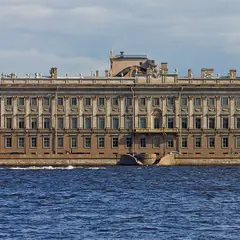
Дворцовая наб.
Новое
Гранит вдоль Эрмитажа с самым широким видом на Неву, Петропавловку и Стрелку; ночью здесь ждут разводку Дворцового моста.
Подробнее и маршрут: Дворцовая набережнаяПозвать сюда: Дворцовая набережная
Фото: Вячеслав Лобанов, CC BY 3.0 · Wikimedia Commons
Дворцовая пл.
Новое
Главная площадь города: Зимний дворец, арка Главного штаба и Александровская колонна; вечерняя подсветка — отдельное удовольствие.
Подробнее и маршрут: Дворцовая площадьПозвать сюда: Дворцовая площадь
Фото: Наталья Филатова, CC BY 3.0 · Wikimedia Commons
Невский пр., 28
Новое
Книжный в доме Зингера на Невском: огромный выбор, кафе, из окон которого виден Казанский собор, и та самая башня с глобусом.
Подробнее и маршрут: Дом книгиПозвать сюда: Дом книги
Фото: Natalie Domini, CC BY-SA 3.0 · Wikimedia Commons
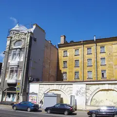
Садовая ул., 21А
Новое
Кофейня на всех пяти этажах модернового дома 1903–1904 годов: лестница модерн, исторические окна, зелень на первом этаже и мини-оранжерея на втором.
Подробнее и маршрут: Дом ФлоуПозвать сюда: Дом Флоу
Фото здания: Артём Светлов, CC BY-SA 4.0 · Wikimedia Commons
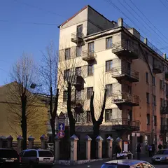
ул. Рубинштейна, 7
Новое
Конструктивистский дом 1929–1931 годов с террасой пятого этажа под скатной кровлей и доской Ольге Берггольц на фасаде. Удобный ракурс — с угла Графского переулка.
Подробнее и маршрут: Дом-коммуна «Слеза социализма»Позвать сюда: Дом-коммуна «Слеза социализма»
Фото: Potekhin, CC BY-SA 3.0 · Wikimedia Commons
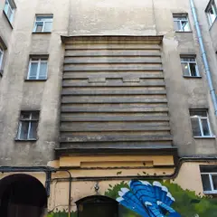
Большой Казачий пер., 11
КруглосуточноНовое
Простая районная баня у Сенной без лишнего лоска: крепкая парная в общем классе и люксы с бассейном для компании.
Подробнее и маршрут: Казачьи баниПозвать сюда: Казачьи бани
Фото: Kaganer, CC BY-SA 4.0 · Wikimedia Commons
Инженерная ул., 2-4
Новое
Кафе в колонном зале корпуса Бенуа Русского музея: завтраки, красивые десерты и русская кухня в исторических стенах.
Подробнее и маршрут: Кафе БенуаПозвать сюда: Кафе Бенуа
Фото: Никонико962, CC BY-SA 4.0 · Wikimedia Commons
Инженерная ул., 2-4
Новое
Русский XX век: Малевич, Петров-Водкин, Кандинский и крупные временные проекты в отдельном здании.
Подробнее и маршрут: Корпус Бенуа Русского музеяПозвать сюда: Корпус Бенуа Русского музея
Фото: Никонико962, CC BY-SA 4.0 · Wikimedia Commons
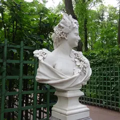
наб. Кутузова, 30
Новое
Старейший регулярный сад города: мраморные статуи, фонтаны и знаменитая ограда у Невы. Осенью аллеи особенно хороши.
Подробнее и маршрут: Летний садПозвать сюда: Летний сад
Фото: Anastasia Galyamicheva, CC BY-SA 4.0 · Wikimedia Commons
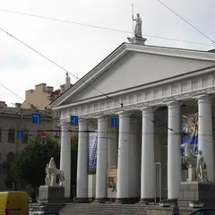
Исаакиевская площадь, 1
Новое
Огромный зал у Исаакия с самыми громкими выставками сезона: от классики до медиаискусства.
Подробнее и маршрут: МанежПозвать сюда: Манеж
Фото: SERGiK73, CC BY-SA 3.0 · Wikimedia Commons
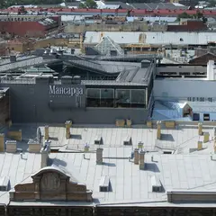
Почтамтская ул., 3-5
Новое
Ресторан под крышей с огромными окнами: купол Исаакия почти рукой подать — выбор для важного вечера.
Подробнее и маршрут: МансардаПозвать сюда: Мансарда
Фото: Vadim Indeikin, CC BY-SA 3.0 · Wikimedia Commons
Театральная площадь, 1
Новое
Бирюзово-золотой зал, где идут «Жизель» и «Лебединое озеро» — главный повод нарядиться в Петербурге.
Подробнее и маршрут: Мариинский театр — историческая сценаПозвать сюда: Мариинский театр — историческая сцена
Фото: Jaimrsilva, CC BY-SA 4.0 · Wikimedia Commons
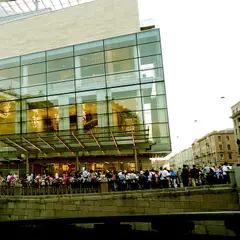
ул. Декабристов, 34
Новое
Новая сцена Мариинского с отличной акустикой и большой афишей оперы и балета.
Подробнее и маршрут: Мариинский-2Позвать сюда: Мариинский-2
Фото: randreu, CC BY 3.0 · Wikimedia Commons
площадь Искусств, 1
Новое
Уютный бело-красный зал на площади Искусств: балет и опера, а билеты достать проще, чем в Мариинку.
Подробнее и маршрут: Михайловский театрПозвать сюда: Михайловский театр
Фото: Екатерина Борисова, CC BY-SA 4.0 · Wikimedia Commons
Литейный пр., 53В
Новое
Квартира поэта во флигеле Шереметевского дворца, тихий сад и вечера поэзии в атмосфере эпохи.
Подробнее и маршрут: Музей Анны Ахматовой в Фонтанном домеПозвать сюда: Музей Анны Ахматовой в Фонтанном доме
Фото: MilanSPb, CC BY-SA 4.0 · Wikimedia Commons
ул. Рубинштейна, 23
Новое
Квартира Сергея Довлатова на Рубинштейна: история писателя и Ленинграда 70-х в одном доме.
Подробнее и маршрут: Музей ДовлатоваПозвать сюда: Музей Довлатова
Фото: Kommunalka1912, CC BY-SA 4.0 · Wikimedia Commons
Библиотечный пер., 4к2
Новое
Огромный ангар у Балтийского вокзала с паровозами, вагонами и тепловозами, в которые можно зайти.
Подробнее и маршрут: Музей железных дорог РоссииПозвать сюда: Музей железных дорог России
Фото: Анастасия Юрьевна Львова, CC BY-SA 4.0 · Wikimedia Commons
Большая Морская ул., 47
Новое
Родовой особняк писателя на Большой Морской: коллекция бабочек, семейная история и небольшие выставки.
Подробнее и маршрут: Музей НабоковаПозвать сюда: Музей Набокова
Фото: Vadim Zhivotovsky, CC BY 3.0 · Wikimedia Commons
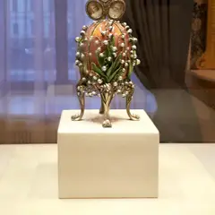
наб. реки Фонтанки, 21
Новое
Императорские пасхальные яйца и ювелирка в Шуваловском дворце — красиво, нарядно и не слишком долго.
Подробнее и маршрут: Музей ФабержеПозвать сюда: Музей Фаберже
Фото: GAlexandrova, CC BY-SA 4.0 · Wikimedia Commons
Соляной пер., 15
Новое
Музей прикладного искусства со стеклянным куполом Большого зала — одно из самых красивых пространств.
Подробнее и маршрут: Музей ШтиглицаПозвать сюда: Музей Штиглица
Фото: Lion10~commonswiki, CC BY-SA 4.0 · Wikimedia Commons
наб. реки Мойки, 12
Новое
Последняя квартира поэта у Конюшенной: кабинет, библиотека и история последней дуэли.
Подробнее и маршрут: Музей-квартира ПушкинаПозвать сюда: Музей-квартира Пушкина
Фото: Alexander Ardatov, CC BY 3.0 · Wikimedia Commons


Готовые планы 18 из 110
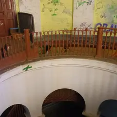
- Парадная с ротондой (дом Яковлева) · Парадная с ротондой · м. Сенная площадь
- 9 минут пешкомДом Флоу · Кофейня в особняке модерн
Круглая лестница с колоннами до купола, потом кофе на пяти этажах особняка с оранжереей на Садовой.
Открыть план: Ротонда на Гороховой и кофе в доме модернПозвать сюда: Ротонда на Гороховой и кофе в доме модерн
Фото: Artyom Svetlov, CC BY-SA 4.0 · Wikimedia Commons
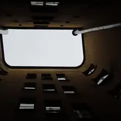
- Проходные дворы Толстовского дома · Проходные дворы, северный модерн · м. Достоевская
- 4 минуты пешкомДом-коммуна «Слеза социализма» · Дом-коммуна, конструктивизм
- 3 минуты пешкомАрхитектор · Коктейльный бар без вывески
Арки Толстовского дома, конструктивистская «Слеза социализма» и коктейль в «Архитекторе», который легко пройти мимо.
Открыть план: Рубинштейна: дворы Лидваля и бар без вывескиПозвать сюда: Рубинштейна: дворы Лидваля и бар без вывески
Фото: angelius1979, CC BY-SA 3.0 · Wikimedia Commons
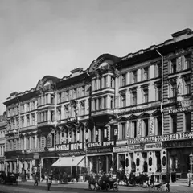
- Café Alto · Кафе-кофейня · м. Гостиный двор
- 4 минуты пешкомМузей-фотосалон Карла Буллы · Старинное фотоателье
Кофе среди винтажной мебели в Café Alto, потом старинное фотоателье Буллы, где можно сняться в декорациях.
Открыть план: Фотоателье Буллы и кофе на КараваннойПозвать сюда: Фотоателье Буллы и кофе на Караванной
Фото: Karl Bulla, общественное достояние · Wikimedia Commons
- Александринский театр · Театр · м. Гостиный двор
- 5 минут пешкомOy! · Коктейльный бар
Классика в новой режиссуре и ложи в золоте старейшего драмтеатра, а потом 5 минут пешком — мартини-бар с устрицами.
Открыть план: Александринка и мартини с устрицамиПозвать сюда: Александринка и мартини с устрицами
Фото: Bene Riobó, CC BY-SA 4.0 · Wikimedia Commons
- Музей Анны Ахматовой в Фонтанном доме · Музей · м. Маяковская
- 6 минут пешкомSalone Pasta&Bar · Итальянский ресторан
Квартира Ахматовой во флигеле Фонтанного дома и тихий сад за ним, а потом 6 минут пешком вдоль Фонтанки — свежая паста без лишней торжественности.
Открыть план: Ахматова и паста на ФонтанкеПозвать сюда: Ахматова и паста на Фонтанке
Фото: MilanSPb, CC BY-SA 4.0 · Wikimedia Commons
- Музей Набокова · Музей · м. Адмиралтейская
- 1 минута пешкомTeplo · Кафе
Коллекция бабочек в родовом особняке писателя на Большой Морской, а через дорогу — кафе-квартира с диванами и пледами.
Открыть план: Бабочки Набокова и кафе-квартираПозвать сюда: Бабочки Набокова и кафе-квартира
Фото: Vadim Zhivotovsky, CC BY 3.0 · Wikimedia Commons
- Мариинский театр — историческая сцена · Театр оперы и балета · м. Садовая
- 10 минут пешкомKuznya House · Ресторан
Бирюзово-золотой зал и «Жизель» — главный повод нарядиться, а после спектакля 10 минут пешком до Новой Голландии на поздний ужин в старой кузнице.
Открыть план: Балет в Мариинском и ужин на островеПозвать сюда: Балет в Мариинском и ужин на острове
Фото: Jaimrsilva, CC BY-SA 4.0 · Wikimedia Commons
- Во весь голос · Книжный магазин · м. Чернышевская
- 1 минута пешкомХроники · Рюмочная
Места для чтения и встречи с авторами в «Во весь голос», а через дорогу — бар-рюмочная с творческой публикой.
Открыть план: Большой книжный и рюмочнаяПозвать сюда: Большой книжный и рюмочная
Фото здания: GAlexandrova, CC BY-SA 4.0 · Wikimedia Commons
- Ruc's Heaven · Винный бар · м. Площадь Восстания
- 3 минуты пешкомПляски · Танцевальный бар
Кава, альбариньо и винные коктейли в баре на Песках, а через пару минут — танцевальный бар с диско-караоке по субботам.
Открыть план: Вино на Песках и танцыПозвать сюда: Вино на Песках и танцы
Фото здания: Bestalex, CC BY-SA 4.0 · Wikimedia Commons
- Манеж · Выставочный зал · м. Адмиралтейская
- 4 минуты пешкомTeplo · Кафе
Самая громкая выставка сезона в огромном зале у Исаакия, а потом 4 минуты пешком — уютное кафе с пледами, чтобы согреться и обсудить увиденное.
Открыть план: Выставка в Манеже и пледы в TeploПозвать сюда: Выставка в Манеже и пледы в Teplo
Фото: SERGiK73, CC BY-SA 3.0 · Wikimedia Commons
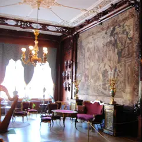
- Юсуповский дворец · Музей · м. Садовая
- 4 минуты пешкомЕМ · Ресторан
Домашний театр князей и подвальные комнаты, где убили Распутина, а потом 4 минуты пешком по Мойке — ужин из многих перемен в «ЕМ».
Открыть план: Дворец Юсуповых и ужин-сет на МойкеПозвать сюда: Дворец Юсуповых и ужин-сет на Мойке
Фото: Jim Gateley, CC BY 3.0 · Wikimedia Commons
- Дворцовая площадь · Площадь · м. Адмиралтейская
- 9 минут пешкомЧАО Какао · Какаочная
Арка Главного штаба и Александровская колонна в вечерней подсветке, а потом 9 минут пешком — густой горячий шоколад из окошка какаочной.
Открыть план: Дворцовая и горячий шоколадПозвать сюда: Дворцовая и горячий шоколад
Фото: Наталья Филатова, CC BY 3.0 · Wikimedia Commons
- Дом книги · Книжный магазин · м. Невский проспект
- 5 минут пешкомTerrassa · Ресторан
Книжный в доме Зингера с видом на Казанский собор, а потом 5 минут пешком — ресторан на крыше с куполами и Домом Зингера под ногами.
Открыть план: Дом книги и ужин на крышеПозвать сюда: Дом книги и ужин на крыше
Фото: Natalie Domini, CC BY-SA 3.0 · Wikimedia Commons
- Eggsellent · Кафе-кофейня · м. Садовая
- 5 минут пешкомНовая Голландия · Культурное пространство
Яйца во всех видах и хороший кофе на Мойке, а потом 5 минут пешком — остров с выставками, маркетами и лекциями.
Открыть план: Завтрак весь день и Новая ГолландияПозвать сюда: Завтрак весь день и Новая Голландия
Фото: Николай Булыкин, CC BY-SA 4.0 · Wikimedia Commons
- Главный штаб Эрмитажа · Музей · м. Адмиралтейская
- 4 минуты пешкомЛитературное кафе · Ресторан
Матисс и Пикассо в светлых анфиладах Главного штаба, а через 4 минуты пешком — ужин в кафе с интерьерами XIX века, откуда Пушкин уехал на дуэль.
Открыть план: Импрессионисты и Литературное кафеПозвать сюда: Импрессионисты и Литературное кафе
Фото: Max A. Khlopov, CC BY-SA 3.0 · Wikimedia Commons
- Казачьи бани · Баня · м. Пушкинская
- 9 минут пешкомДиккенс · Паб
Крепкая парная в общем классе или люкс с бассейном для компании, а потом 9 минут пешком — английский паб с футболом.
Открыть план: Казачьи бани и паб на ФонтанкеПозвать сюда: Казачьи бани и паб на Фонтанке
Фото: Kaganer, CC BY-SA 4.0 · Wikimedia Commons
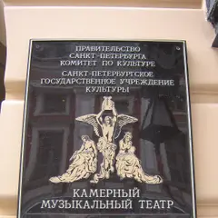
- «Санктъ-Петербургъ Опера» · Театр оперы · м. Адмиралтейская
- 8 минут пешкомKuznya House · Ресторан
Маленький зал в особняке барона Дервиза, где сидишь почти на сцене, а потом 8 минут пешком до Новой Голландии — поздний ужин в старой кузнице.
Открыть план: Камерная опера и ужин на островеПозвать сюда: Камерная опера и ужин на острове
Фото: Peterburg23, CC BY 3.0 · Wikimedia Commons
- Государственная академическая Капелла · Концертный зал · м. Адмиралтейская
- 2 минуты пешкомBellevue · Ресторан
Хор или симфония в старинном зале с идеальной акустикой у Певческого моста, а через пару минут пешком — ужин над крышами у Дворцовой.
Открыть план: Капелла и ужин с видом на ДворцовуюПозвать сюда: Капелла и ужин с видом на Дворцовую
Фото: GAlexandrova, CC BY-SA 4.0 · Wikimedia Commons

Компьютерные клубы 8
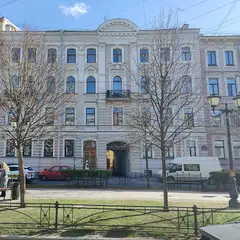
Фурштатская ул., 25
КруглосуточноНовое
Круглосуточный клуб у Чернышевской, в паре кварталов от Таврического сада — легко совместить игру с прогулкой.
Подробнее и маршрут: Divinity SpaceПозвать сюда: Divinity Space
Фото здания: Анастасия Юрьевна Львова, CC BY-SA 4.0 · Wikimedia Commons
Невский пр., 91
КруглосуточноНовое
Клуб прямо на Невском у Московского вокзала, открыт без перерыва — можно скоротать время до поезда или провести ночь с друзьями.
Загородный пр., 45
КруглосуточноНовое
Один из самых обсуждаемых клубов центра — сотни отличных отзывов, открыт круглые сутки, от Пушкинской идти пару минут.
Подробнее и маршрут: Colizeum · ЗагородныйПозвать сюда: Colizeum · Загородный
Гороховая ул., 49
КруглосуточноНовое
Круглосуточный клуб у Сенной с солидной базой отзывов; есть подарочные сертификаты и доступ к играм по подписке.
Подробнее и маршрут: Community HeroesПозвать сюда: Community Heroes
Миргородская ул., 1БЖ
КруглосуточноНовое
Точка известной киберспортивной сети в квартале за Московским вокзалом: ПК и приставки PlayStation, открыто 24/7, оценки у игроков почти идеальные.
пер. Антоненко, 5
КруглосуточноНовое
На Васильевском недалеко от Василеостровской: игровые ПК, кальян и бильярд под одной крышей, открыто 24/7, пускают с собакой.
Невский пр., 136
КруглосуточноНовое
Круглосуточный клуб на Невском недалеко от площади Восстания — удобная точка сбора, чтобы играть командой до утра.
Кременчугская ул., 11к1
КруглосуточноНовое
Демократичные цены — порядка 150 ₽ за час, работает 24/7; хороший вариант для долгой сессии с друзьями.
Подробнее и маршрут: Центр киберспортаПозвать сюда: Центр киберспорта
Как позвать
- Выбери план, место или событие — в карточке адрес, цены и маршрут в Яндекс Картах.
- Нажми «Позвать сюда» — соберётся приглашение-игра для свидания или голосование для компании.
- Отправь ссылку в любой мессенджер: тебе ответят, а компания отметит, куда и когда может. Бесплатно и без регистрации.